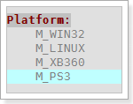
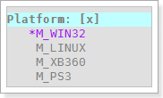
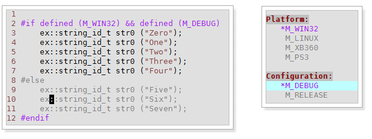
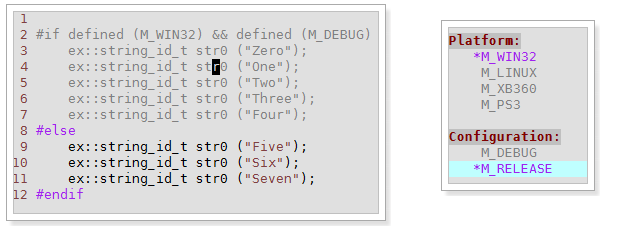

Intro
exMacroHighlight is a plugin working with projects have c-like macro define syntax: #ifdef. The basic idea is come from visual studio.net 2005, in vs.net 2005 and above, it support gray highlight between disabled macro block. In other word, if you define macro MA_DISABLE equals to 0, then in codes between #if MA_DISABLE and #endif, it shows gray color to represent the code doesn’t work at all. This help programmer reading code with macros without knowing what the real value are of the macros.
Unfortunately, vs.net did a bad job in this, and it even create side effect since the internal macro parsing programme sometimes gets wrong value and disable the valid codes (I always get this error when I switch configuration from Debug to Release). Also its gray color make you hard to read disable code even if you want to read it! And you can’t manually switch your macro highlight from one define to another since all process is automatically done in the background. I’ve been receive lots of complaining of this feature in my company from other programmer, and then decide to develop this plugin to solve the problem.
exMacroHighlight is not the plugin that can doing the macro parsing automatcally in the background, actually it never read macro from codes which will consume lots of performance from vim. Instead, it will let you write down those macro you care about, and save it as a file, read these defined macro create syntax highlight then apply to those c-like filetype.
Base on this idea, exMacroHighlight will be efficient, controllable and easy to switch to different macro defines.
Variables
exMH_window_height
Set the height of the window. This variable only effect when the g:exMH_use_vertical_window = 0
let g:exMH_window_height = 20
exMH_window_width
Set the width of the window. This variable only effect when the g:exMH_use_vertical_window = 1
let g:exMH_window_width = 30
exMH_window_height_increment
Set the height increase value of window. This variable only effect when the g:exMH_use_vertical_window = 0
let g:exMH_window_height_increment = 30
exMH_window_width_increment
Set the width increase value of window. This variable only effect when the g:exMH_use_vertical_window = 1
let g:exMH_window_width_increment = 100
exMH_window_direction
- topleft
- botright
- belowright
Set the window direction. This variable will be affect by g:exMH_use_vertical_window. When the vertical is true. it picked left, right direction, when the vertical is false, it picked top, bot direction.
let g:exMH_window_direction = 'botright'
exMH_use_vertical_window
Use the vertical window or the horizontal window
let g:exMH_use_vertical_window = 1
Commands
:ExmhSelectToggle
Open/Close exMacroHighlight window. Recommend mapping:
nnoremap <unique> <silent> <Leader>aa :ExmhSelectToggle<CR>
When you open a exMacroHighlight window in a new project, it is a blank page. The window used for writing macro defines in groups. The syntax as shows as:
GroupName_1:
MacroName_11
MacroName_12
MacroName_13
...
MacroName_1n
GroupName_2:
MacroName_21
MacroName_22
MacroName_23
...
MacroName_2n
...
GroupName_n:
MacroName_n1
MacroName_n2
MacroName_n3
...
MacroName_nn
The GroupName is the name of a group consist of macros, you can named what ever you want just help you group that macros. And the MacroName is the name of the macro same as they in the code of your project. For example, you have macro M_WIN32, M_LINUX, M_XB360, M_PS3, you can named your group as Platform, the text in exMacroHighlight should be like:
Platform:
M_WIN32
M_LINUX
M_XB360
M_PS3
Here shows how it looks like in plugin:

Note: a macro group is not create to organize similar meaning of macro in one group, It is said there can only be one item (macro) been enable/define in one group. Which means, when you choose M_WIN32, the M_LINUX, M_XB360, M_PS3 will be treat as they are undefined, or define as 0. And that is how macro highlight works.
When you choose a macro by <return>, the choosing macro will have a “star” marks in fron of it, like the picture shows below. Also its color will be different than others. And the code in edit window will highlight obey the rules.

If you don’t want any macros in one group have affect with exMacroHighlight, just disable that group by press <return> in the GroupName. If disable you will see [x] marks behind the group name as picture shows below. press <return> again to re-enable it.
Note: You can combined several group macro together, for example, it is valid to highlight codes with #if defined (M_WIN32) && defined (M_DEBUG), and here is the example:

when I switch the macro define in group Configuration from M_DEBUG to M_RELEASE, the highlight of code changes:

There are tones of way to combine macro highlights, I can’t guaranty the plugin works all right for all of them. For example you may have problem with #if defined (M_WIN32) && defined (M_UNKNOWN) where the M_UNKNOWN macro is not define in the macro highlight window. But for common use, it is enough. Complexity brings inefficient, why don’t we keep everything like vim :p.
:ExmhHL {args}
Enable/Disable the macro highlight depends on {args} you give.
- 0 means disable.
- 1 means enable.
Note: You seldom need to disable macro highlight since it consume less performance than you think. But when you edit a very huge file, or running vim in a poor PC, this command may save your life. Recommend mapping:
nnoremap <unique> <silent> <Leader>ae :ExmhHL 1 <CR>
nnoremap <unique> <silent> <Leader>ad :ExmhHL 0 <CR>
Key Mappings
<return>
Enable/Disable macro highlight or group highlight
<space>
Resize the exMacroHighlight plugin window by exMH_window_height_increment or exMH_window_width_increment
<esc>
Close the exMacroHighlight plugin window.